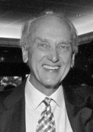

Please note: the AAS Obituaries are temporarily being hosted on this website while their full content is being ingested into the PubPub publishing platform newly adopted by the Bulletin of the American Astronomical Society. When the migration is complete, your existing links will take you to the final, migrated content. Contact peter.williams@aas.org with any questions.
Michael J. Belton (1934-2018)
Michael James Scott Belton, President of Belton Space Exploration Initiatives, LLC, and an Emeritus Astronomer at the National Optical Astronomy Observatory (NOAO), died on 4 June 2018. Born in Bognor Regis, England, on 29 September 1934, Belton received his Bachelor’s degree at the University of St. Andrews in Scotland, and earned his Ph.D. at the University of California, Berkeley. He joined Kitt Peak National Observatory (the precursor to NOAO) in 1964 and carried out research on nearly all objects that fell under "planetary science."
Belton was a member of the Mariner 10 team that flew a space probe by Mercury and Venus. As a member of the Mariner Jupiter/Uranus Science Advisory Committee, he helped define what became the Voyager missions to the outer solar system. He was the Leader of the Galileo Mission Imaging Science Team. Galileo studied the Earth’s Moon, made the first close-up observations of an asteroid, Gaspra, and discovered the first moon of an asteroid, Dactyl, as it passed the asteroid Ida on its way to Jupiter. Before arriving, the team observed the impact of the fragments of Comet Shoemaker-Levy 9 into the Jovian atmosphere and later studied the aftermath in detail. At Jupiter, Belton and his team delved into the nature of the Galilean satellites, the population of small satellites, the Jovian ring system, and the planet’s atmosphere.
Belton was particularly interested in the origin and evolution of planetary systems, the physics of planetary atmospheres, high-resolution ground-based spectroscopy, and had a special affinity for comets. He studied them from ground-based and space-based telescopes and missions. His contributions were focused on understanding the mechanisms of cometary outbursts, determination of rotational states, exploring the interiors of cometary nuclei, how cometary activity can be used to probe the nucleus, and the size-distribution of comets. Belton was also a leader of the planetary science community, most notably chairing the first National Research Council Decadal Survey of Solar System Exploration. Throughout his career, he published in excess of 350 papers.
For his contributions to the exploration of the solar system, an asteroid was designated 3498 Belton by the International Astronomical Union, and in 1995 the Division for Planetary Sciences of the American Astronomical Society awarded him the Gerard P. Kuiper Prize.
In 2000, shortly after retiring from Kitt Peak, he founded Belton Space Exploration Initiatives, LLC, where he continued his planetary research.
Among the young astronomers who worked with him on his many projects, Mike Belton was a mentor who unselfishly encouraged their professional growth. He was an engaging, interested and positive colleague, an out-of-the box thinker and visionary in the truest sense. He is deeply missed.
Predeceased by his wife, Helyn, Mike Belton leaves behind his daughter, Lise Myra Belton (John Prader), his son, Scott Alexander Belton, and 3 grandchildren: Emily Prader, John Prader and Elizabeth Rose Prader. For the past 20 years, he has been married to Anna Don, whose family has embraced him as their father. This family includes Drs. Michael (Sandy) Don, Norman (Tricia) Don and Damon (Kacy) Don. The Don grandchildren he leaves are Lindsay, Kristin, Colin, Abby, Tony and Ben.
Photo credit: Martha Lochert
Obituary written by: Mark V. Sykes (Planetary Science Institute, Tucson, AZ)
Additional links:
BAAS Citation: BAAS, 2018, 50, 033